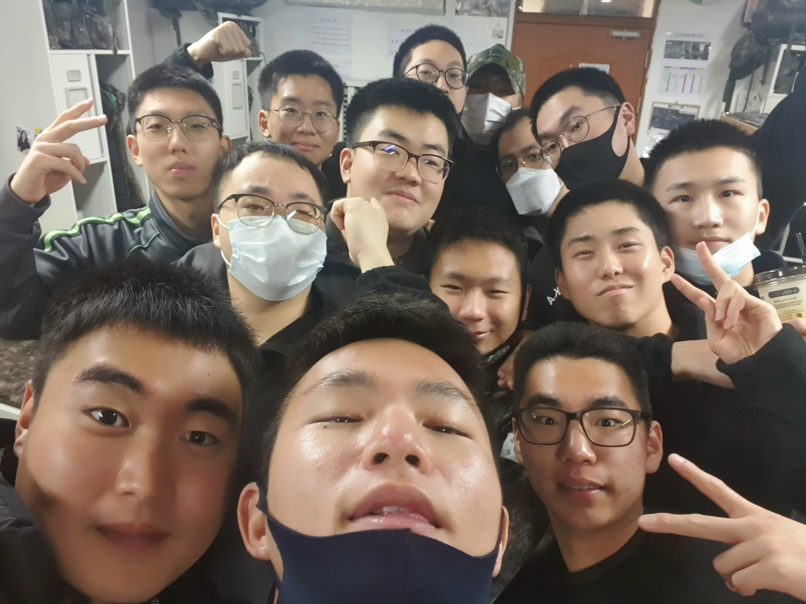

Hello! My name is Min Jae Kang (or Brian), and I was born in South Korea, in Seoul. I moved to the US when I was just 3 years old to California and spent my early education there, all the way up till highschool. I then moved back to Korea to attend an international foreign school, and moved back to the US after highschool to get a degree at University of Wisconsin Madison. I also served in the Korean military (mandatory service) in the 6th division infantry division, Signal Battalian. There, I worked with multiple communication equipment and set up nodes and antennas around the Korean DMZ.
So why am I interested in computer science anyways? Ever since I was young, I really never had a phone or owned some sort video game due to somewhat of a strict upbringing. But at school, I would always watch in awe when classmates or friends would show off and play on their new nintendo, or talk about a brand new game that came out on the smartphone. Unfortunately, I was never able to share my own experiences with others, not until highschool, when I was finally given my first phone. Ever since then, I tried to catch up what I have been missing out on, and immediately I was hooked. I broadened my horizons, going to pc rooms (very popular in Korea), and fell in love with virtualization. There, I knew what I wanted to do in the future. Create something online that would not only get me obsessed, but hope others will share the same feelings about my work.
